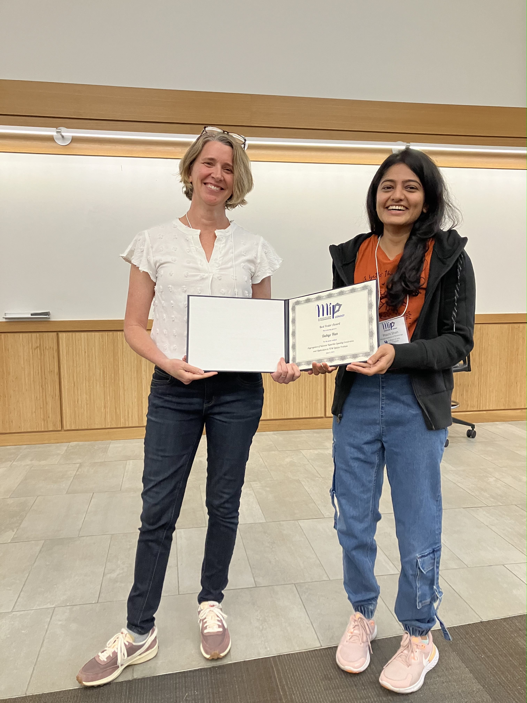
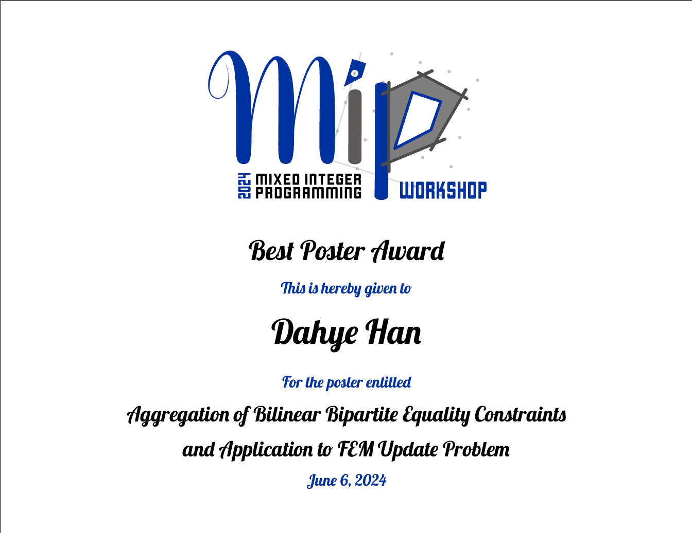
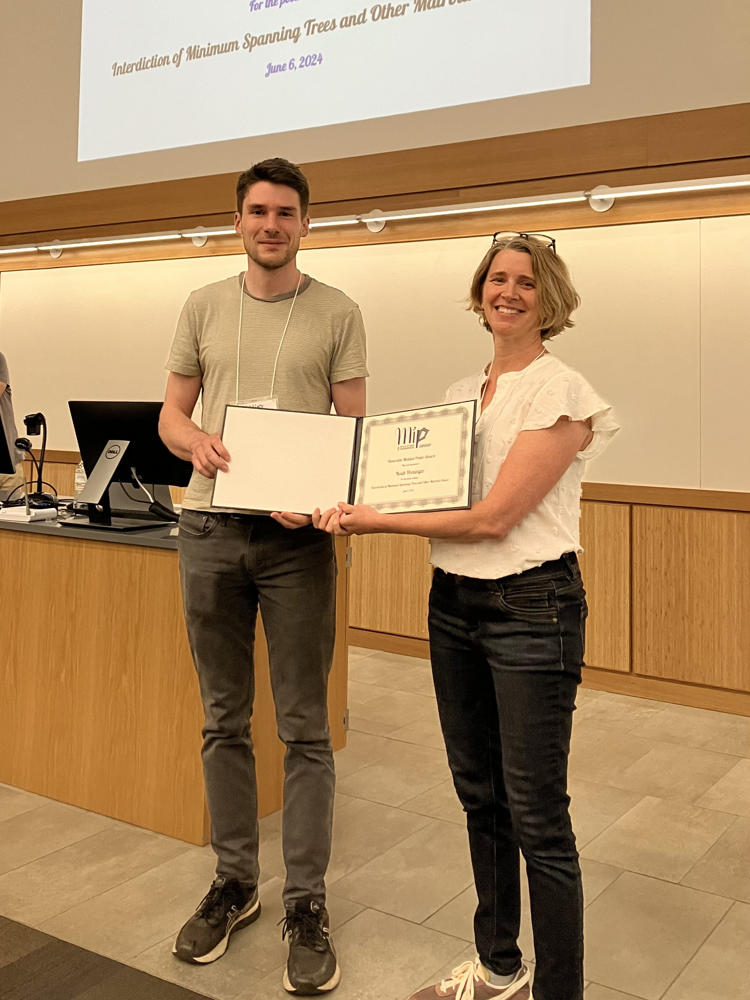
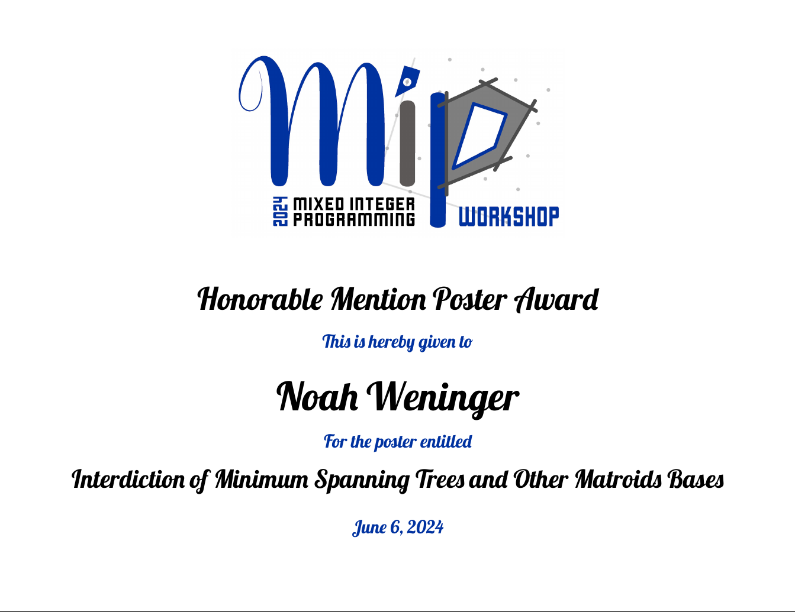
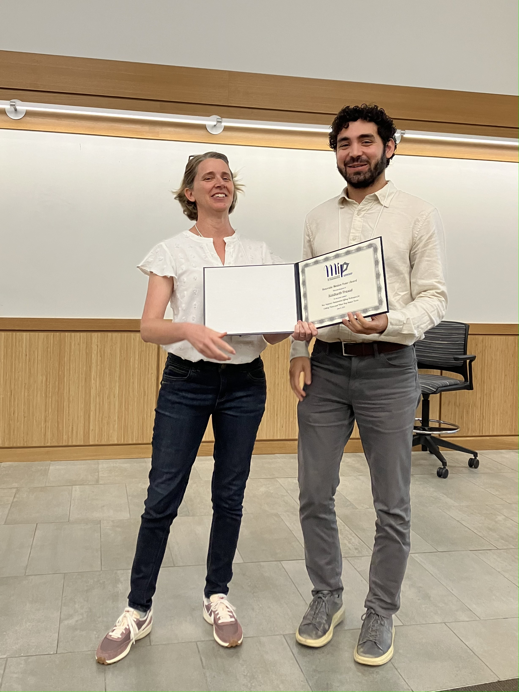
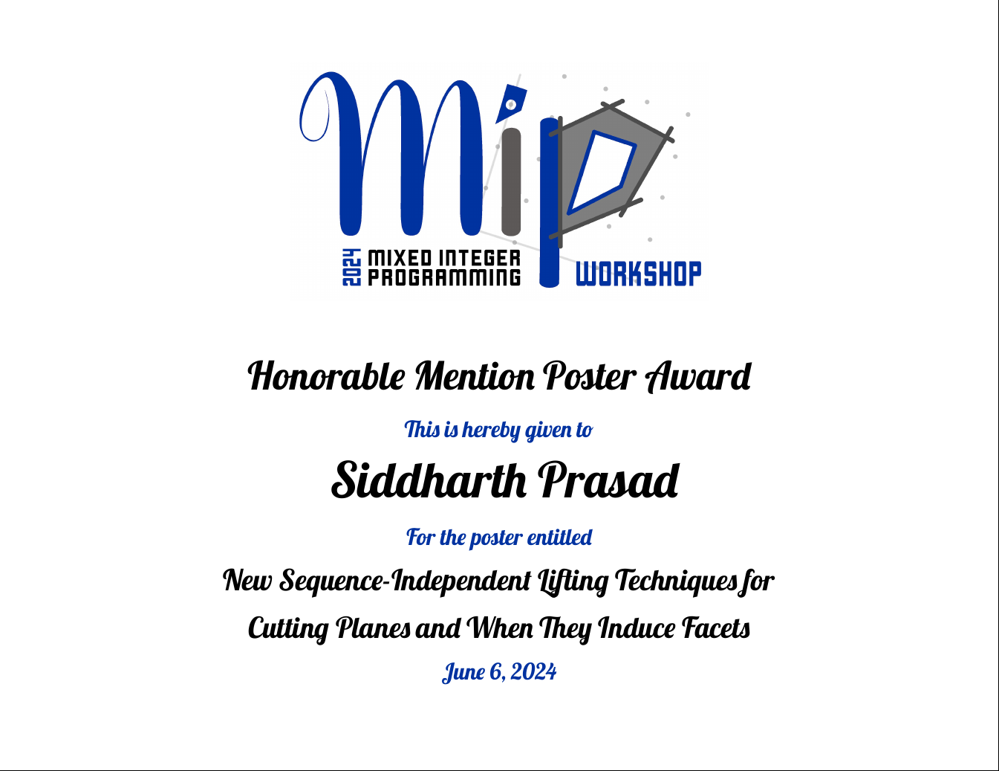
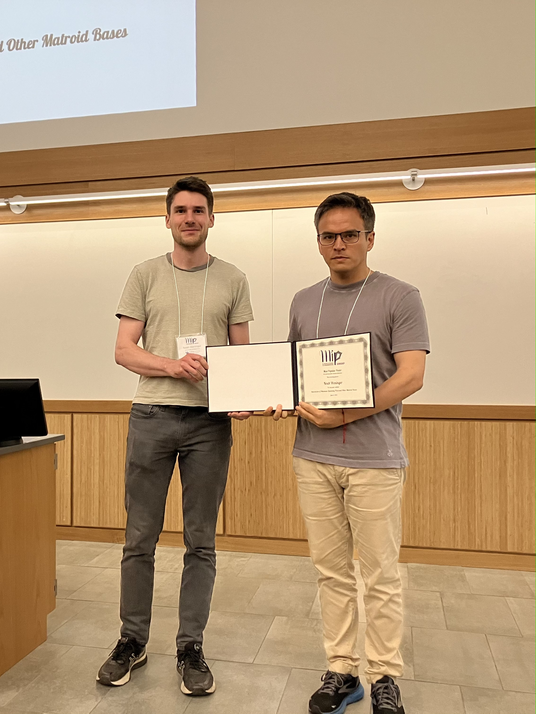
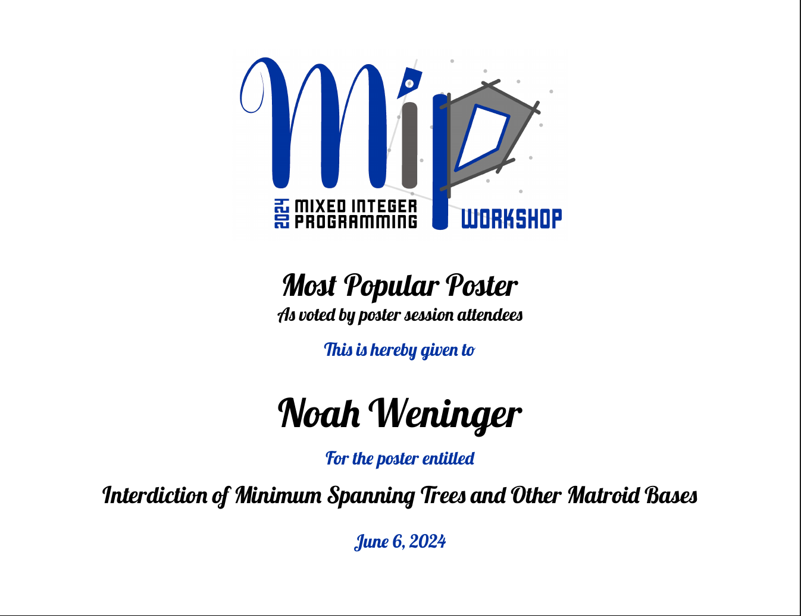

Posters Awards
The committee for the poster awards consisted of
Daphne Skipper (US Naval Academy),
Ted Ralphs (Lehigh University),
Manish Bansal (Virginia Tech),
Jim Ostrowski (University of Tennessee),
and Carla Machini (University of Wisconsin-Madison).
Dahye Han won the best poster award for her poster "Aggregation of Bilinear Bipartite Equality Constraints and Application to FEM Update Problem".
The award has been received by a representative for Dahye on Dahye's behalf.


Noah Weninger received an honorable mention for his poster "Interdiction of Minimum Spanning Trees and Other Matroid Bases".


Siddharth Prasad received an honorable mention for his poster "New sequence-independent lifting techniques for cutting planes and when they induce facets".
The award has been received by a representative for Siddharth on Siddharth's behalf.


Noah Weninger received the award for the most popular poster for this poster "Interdiction of Minimum Spanning Trees and Other Matroid Bases".

